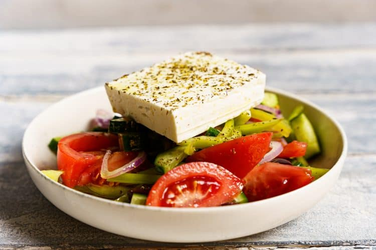

Greek Salad

As greeks call it, choriatiki !!!
I love a good green salad. Mixed greens, romaine, and kale are some of my favorite starting points for fresh,
healthy meals. But summer is a time when all vegetables are at their peak. Sweet, juicy tomatoes, snappy bell peppers,
and crisp cucumbers abound. This Greek salad recipe showcases these veggies, without any greens to get in the way.
And the best past? Because the vegetables are in their prime, this Greek salad recipe is flavorful and refreshing with
just a few ingredients. You only need 7 ingredients to make it! It’s been a hit at our family gatherings over the last
few weeks-my mom even added it to her regular recipe rotation. I hope you love it as much as we do!
Ingredients
- 6-8 tablespoon(s) olive oils
- 2 tablespoon(s) vinegar, of white wine
- 1 tablespoon(s) honey
- salt
- pepper
- 2 tablespoon(s) oregano, dry
- 350 g cherry tomatoes
- 1/3 onion, dry
- 1 green bell pepper
- 1/2 cucumber
- 1 tablespoon(s) capers
- 150 g feta cheese
Steps
- In a bowl, add 4-5 tablespoons of extra virgin olive oil, the vinegar,
honey, salt, pepper and 1 tablespoon oregano.
Gently stir with a spoon
just to combine, you don't want to emulsify the dressing.
- Chop the cherry tomatoes in half and add to the bowl.
- Thinly slice the cucumber into half-moon shapes and thinly slice the onion. Add to the bowl.
- Cut the green pepper into thin strips and add to the bowl.
- Add the olives, capers, feta and 1 tablespoon oregano.
- To finish, drizzle with 2-3 tablespoons extra virgin olive oil, top with rusks and serve.